Status snapshot: 2026‑07‑03. Repo: SURGE-exp, branch feat/m3dc1-on-model-bench.
This report documents (1) how the data was generated and where it lives, (2) how the SURGE training workflow is run, (3) the model zoo and where each model lives, and (4) results for the three M3D‑C1 AI tasks that show real progress — growth rate γ, core/edge mode locator, and the eigenmode (δp̂ spectrum) predictor — including loss curves, run comparisons, and per‑case eigenmode visuals.
Headline update (2026‑07‑02): the δp̂ spectrum model was pushed from global val R² ≈ 0.84 to test global R² 0.920 / pattern R² 0.924 by three orthogonal levers — target flooring (clip the max‑norm log10 target at −6 dex), target smoothing (Gaussian σ=1 denoise), and quarantining the 2 corrupt cases found by a full‑dataset quality scan. A new core‑mode balancing toggle (
--balance-psi) improves rare core modes (R² 0.897→0.908) and peak amplitude at a ~0.003 aggregate cost. See §4.4.Prior headline (2026‑07‑01): the plateau was first broken by per‑case max normalization (val R² 0.605 → 0.836; per‑case pattern R² median −0.9 → 0.74).
Follow-up (2026‑07‑06): Runs B (geom), D (σ=0.5), D′ (σ=0) — synthesis in
SURGE_M3DC1_RESEARCH_NARRATIVE.md; measured facts only inSURGE_M3DC1_FACTS.md. (This file is unchanged as the detailed lab notebook.)Figures. All images are committed next to this file under
docs/m3dc1/assets/and referenced with relative paths, so they render on GitHub and in the Markdown preview.
| Item | Value |
|---|---|
| Raw M3DC1 batch | /pscratch/sd/a/asvillar/mp288/jobs/batch_16/ (10,201 case dirs: run*/sparc_*/) |
| Per‑case verification file | csdata_deltap_b_ver.h5 (one per case dir) |
| Grid / spectrum | 201×201 (R,Z), poloidal harmonics m ∈ [−100, 100], full FFT |
| Postprocess entry point | m3dc1ml-run-batch → m3dc1ml/.../postprocess/run_batch.py |
| Generation script | m3dc1ml/scripts/build_csdata_deltap_b_ver.sh (+ .slurm) |
| Scalars dataset (γ etc.) | data/datasets/SPARC/case_scalars_ver.parquet — 9,976 cases |
| Dataset metadata | case_scalars_ver_metadata.yaml |
| Exploration notebook | m3dc1ml/notebooks/explore_csdata_deltap_b_test.ipynb |
| Curation / validation notebook | m3dc1ml/notebooks/curate_validate_mlm3dc1_predictions.ipynb |
What's inside each csdata_deltap_b_ver.h5:
spectrum/{p,br,bz,bphi} (complex spec[t, m, ψ] + m_modes, psi_norm),
pertfields/{p,p_hat,p_phi0,p_phiq,...} (the δp field on the 201×201 R,Z grid),
equilibrium/ (ψ(R,Z), grad‑ψ, magnetic axis), flux_average/{q,p,ne,...},
miller/{R0,a,kappa,delta}, parset/{ntor,pscale,batemanscale}, growth_rate/.
How generation works (short version): M3DC1 runs produce C1.h5 + equilibrium.h5
per case. m3dc1ml postprocess uses the M3DC1 fpy bindings + flux_coordinates
(PEST) to evaluate the perturbed pressure/field on the R,Z grid, poloidally
Fourier‑transforms to δp̂(m, ψ_N), and stores both the field and the spectrum
(with a reconstruction self‑check). Code:
postprocess/build_sdata.py.
A representative case (field δp(R,Z), spectrum |δp̂|(m,ψ), and profiles), rendered by the exploration notebook:
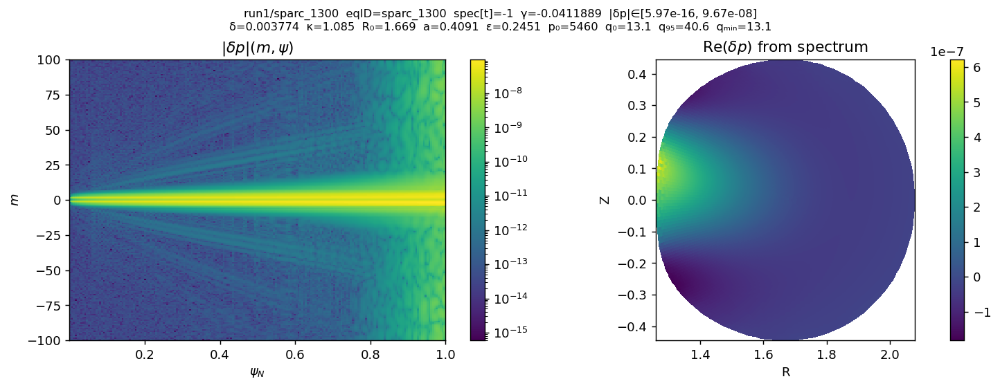
Repositories:
- SURGE (framework, experiments): github.com/S-Villar/SURGE-exp (branch feat/m3dc1-on-model-bench)
- M3DC1 postprocess/IO/viz: github.com/S-Villar/m3dc1ml
All tabular tasks share one leakage‑free, case‑grouped split so every model sees
exactly the same train/val/test partition. Grouping is by run_id + eq_id
(GroupShuffleSplit), so all rows from one physical case stay in one split.
surge/engine.pysurge/workflow/spec.pysurge/workflow/run.pysurge/benchmarks/hpo.pyEach run writes: metrics.json, workflow_summary.json, splits.json
(+ leakage_check), model_card_*.json, training_history_*.json, and
plots/training_dashboard_*.png.
The δp̂ eigenmode has an arbitrary overall amplitude (the eigenvector normalization
is meaningless — cases range from |δp|max ~ 1e4 to ~1e-7); only the shape is
physical. SURGE now supports per‑sample output normalization so a model learns the
shape and the absolute scale is factored out:
per_sample_max_scale / invert_per_sample_max_scale in
surge/preprocessing.py (modes max, absmax, l2).EngineRunConfig.output_per_sample_norm,
ScalerBundle.output_per_sample_scale): each output vector is divided by its own
magnitude before any log/standardization, and the stored per‑row scale is used to
invert predictions back to original units for metrics.output_per_sample_norm.This is distinct from StandardScaler (global per‑column stats): it is parameter‑free
per row and is exactly what the eigenmode problem needs.
Run a workflow (example — γ, all models):
conda activate /global/cfs/projectdirs/m3716/software/asvillar/envs/surge
python scripts/m3dc1/internal/run_workflow.py configs/internal/m3dc1_gamma_ver_allmodels.yaml
Configs live in configs/internal/. Full how‑to:
docs/m3dc1/TRAINING_RUNBOOK.md,
spectrum how‑to: docs/m3dc1/SPECTRUM_TRAINING_RUNBOOK.md,
HPO details: docs/m3dc1/HPO_COMPARISON.md.
| Model (key) | Type / architecture | Backend |
|---|---|---|
ridge |
Linear regression, L2 penalty (baseline) | sklearn |
random_forest |
Bagged decision‑tree ensemble | sklearn |
gradient_boosting |
Sequential boosted trees | sklearn |
sk_mlp |
sklearn feed‑forward MLP | sklearn |
torch_mlp |
PyTorch MLP (configurable depth/width) | adapters |
residual_mlp |
MLP with residual/skip blocks | residual_mlp.py |
geom_residual_mlp |
Residual MLP + geometry‑aware feature map | adapters |
mlp_ensemble |
Deep ensemble of MLPs (mean + uncertainty) | mlp_ensemble.py |
ft_transformer |
Feature‑Tokenizer Transformer (tabular attention) | ft_transformer.py |
vae |
Variational auto‑encoder w/ regression head | vae.py |
fno2d |
2D Fourier Neural Operator — spectral conv in Fourier space, resolution‑invariant operator learning | fno2d.py |
unet |
U‑Net — encoder/decoder CNN with skip connections | unet.py |
deeponet |
Operator net (branch/trunk) | deeponet.py |
The spectrum‑image FNO2D/U‑Net driver (2D |δp̂|(m,ψ) prediction with
physics‑informed conditioning channels incl. the m − n·q(ψ) resonance channel):
scripts/m3dc1/internal/train_spectrum_image.py.
Net config: _FNO2dNet(in=11, out=1, hidden=32, n_modes=16, n_layers=4),
_UNetNet(in=11, out=1, base=48, depth=4).
Target gamma; 11 equilibrium/scalar inputs; case‑grouped split.
Run: runs/m3dc1_gamma_ver_allmodels/ · HPO: runs/m3dc1_gamma_ver_batch_hpo/.
| Model | test R² | test RMSE | test MAE |
|---|---|---|---|
| torch_mlp (HPO) | 0.868 | 0.0164 | 0.0065 |
| mlp_ensemble | 0.858 | 0.0171 | 0.0063 |
| random_forest | 0.852 | 0.0174 | 0.0057 |
| torch_mlp | 0.852 | 0.0174 | 0.0065 |
| vae | 0.843 | 0.0179 | 0.0084 |
| residual_mlp | 0.833 | 0.0185 | 0.0072 |
| sk_mlp | 0.822 | 0.0190 | 0.0075 |
| gradient_boosting | 0.803 | 0.0200 | 0.0090 |
| ft_transformer | 0.782 (→ 0.850 w/ HPO) | 0.0211 | 0.0097 |
| geom_residual_mlp | 0.390 (→ 0.743 w/ HPO) | 0.0353 | 0.0232 |
| ridge (linear baseline) | 0.531 | 0.0309 | 0.0186 |
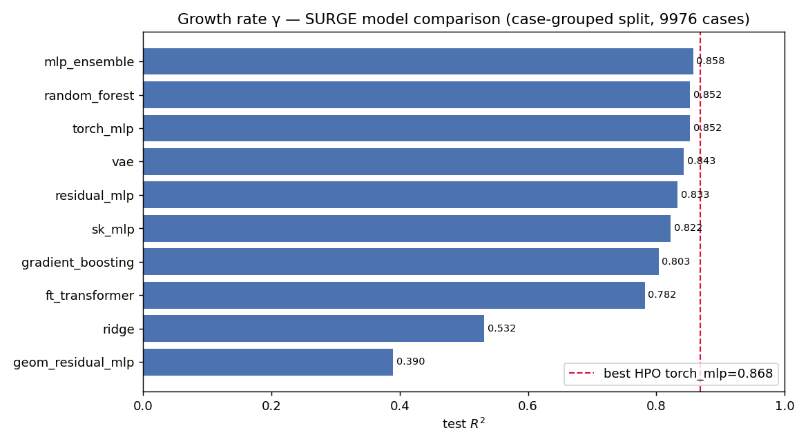
Best‑model predicted‑vs‑true and per‑model training dashboard:
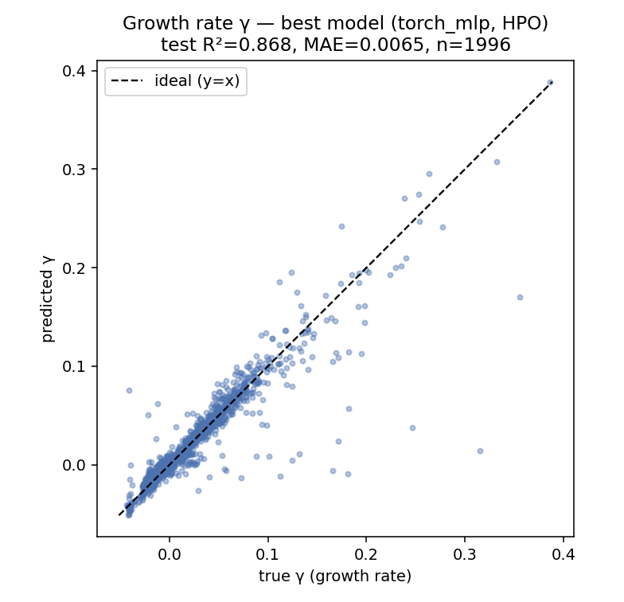
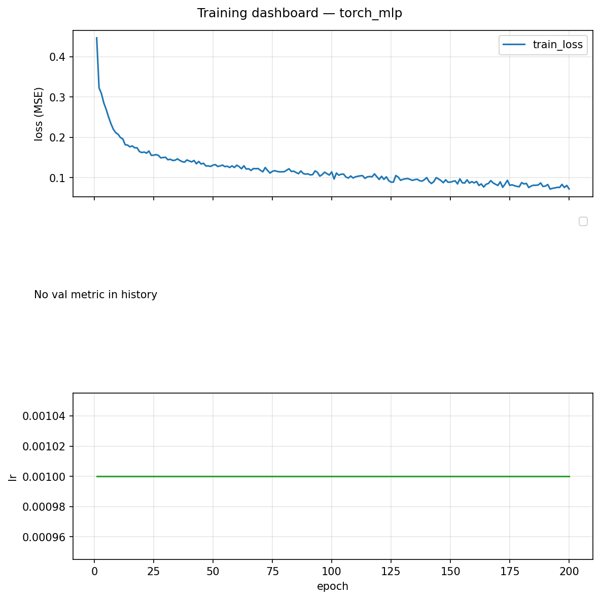
Takeaway: γ is well‑predicted from equilibrium scalars — best R² ≈ 0.87 (HPO torch_mlp), with a tight cluster of NN/ensemble/RF models around 0.85. Linear ridge (0.53) confirms the relationship is strongly nonlinear.
Well‑posed target: radial location of the mode,
ψ_peak = Σ(E·ψ)/ΣE with E(ψ)=Σ_m|δp̂|², then thresholded to core/edge.
Run: runs/peak_location/ (script scripts/m3dc1/internal/peak_location.py,
3,998 cases; features + labels cached in runs/peak_location/peak_location_dataset.parquet,
metrics in runs/peak_location/peak_location_metrics.json).
| Task | Model | Metric |
|---|---|---|
| ψ_peak regression | random_forest | R² = 0.911, MAE = 0.046 |
| ψ_peak regression | mlp | R² = 0.874 |
| ψ_peak regression | grad_boost | R² = 0.851 |
| core vs edge | random_forest (clf) | acc = 0.954, F1(edge) = 0.953, ROC AUC = 0.988 |
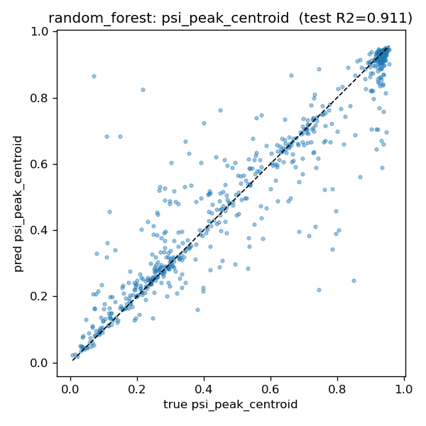
Classifier diagnostics (confusion matrix, and ROC / precision‑recall):
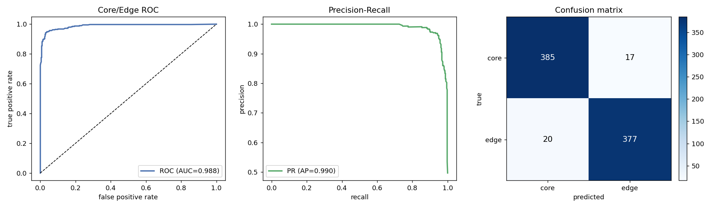
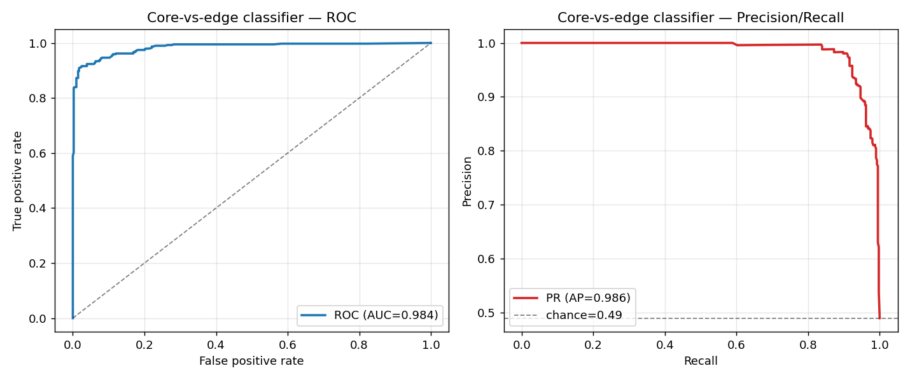
Examples of a clear core mode vs a clear edge mode (field + spectrum):
| Core mode | Edge mode |
|---|---|
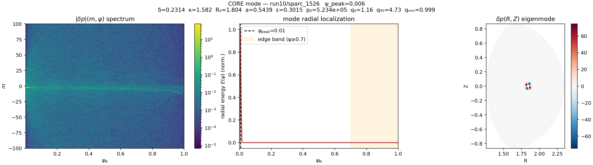 |
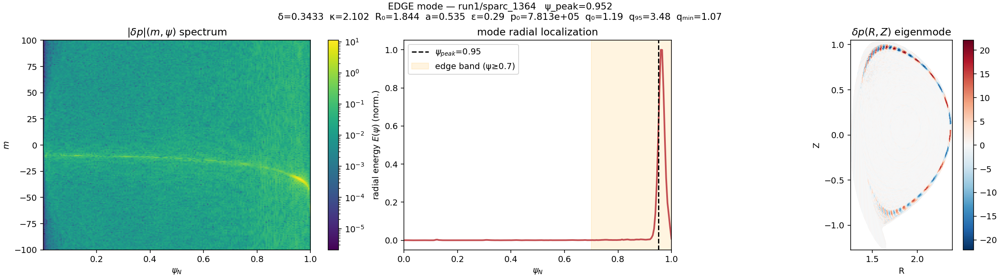 |
Takeaway: where the mode sits radially (and core‑vs‑edge) is highly predictable (R² ≈ 0.91 / 95 % acc / AUC 0.99) from equilibrium scalars — a strong, deployable result.
Predicts the entire |δp̂|(m,ψ) image per case, conditioned on equilibrium channels +
the m − n·q(ψ) resonance channel. Driver:
train_spectrum_image.py.
The prior plateau (global val R² ≈ 0.60, per‑case R² often negative) was caused by
the arbitrary per‑case amplitude dominating the loss. Applying per‑case max
normalization (divide each spectrum by its own peak, then optionally log10) makes
the target the shape only. Result on the full dataset:
| Run | Target space | Best val R² |
|---|---|---|
spectrum_image_full (no norm) |
log10 raw amplitude | 0.605 |
spectrum_image_full_maxnorm_raw |
max‑norm, linear | 0.786 |
spectrum_image_full_maxnorm_log10 |
max‑norm, log10 | 0.836 |
spectrum_image_2500_maxnorm_log10 |
max‑norm, log10 (2.5k subset) | 0.831 |
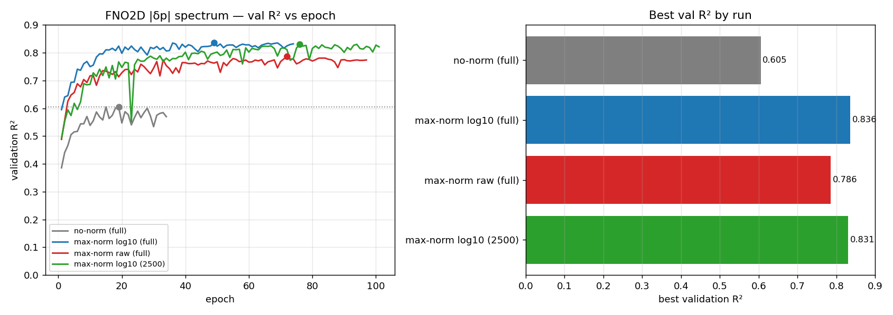
Per‑case pattern R² (best model, max‑norm log10), i.e. how well the shape of each individual spectrum is recovered — the physically meaningful metric:
| Split | median | mean | R² > 0.5 | R² > 0.7 | p10 – p90 |
|---|---|---|---|---|---|
| val (997) | 0.740 | 0.732 | 99 % | 73 % | 0.66 – 0.81 |
| test (1995) | 0.742 | 0.730 | 99 % | 73 % | 0.66 – 0.81 |
This is the key win: essentially every case is now recovered with a positive, useful per‑case R², versus the non‑normalized model where the median per‑case R² was negative.
Validation examples spanning the R² range (columns: ground truth / predicted /
difference; each is log10|δp̂|(m, ψ_N)):
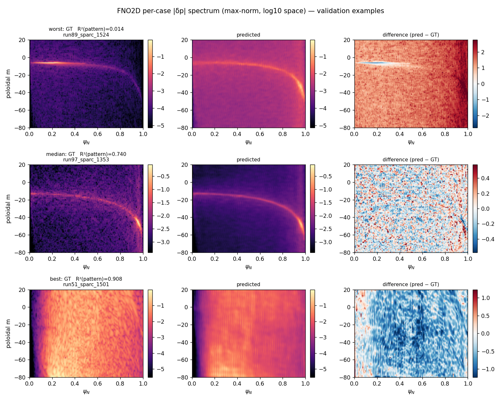
m ridge vs ψ is captured; residual is noise‑floor.Because the eigenmode phase is not learnable, we reconstruct the field by combining
the model's predicted magnitude with the case's true phase, rescaled to the
physical peak, inverse‑FFT'd along m, and mapped onto the fpy PEST flux grid. Each
panel is 2×3 — row 0 = spectrum log10|δp̂|(m,ψ), row 1 = field Re(δp)(R,Z);
columns are ground truth / prediction / difference. Generated by
plot_case_field_recon.py.
Best (pattern R² = 0.91) — core crescent envelope reproduced (amplitude slightly under‑predicted):
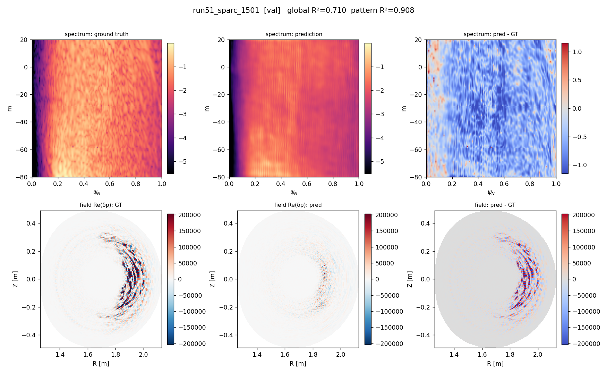
Median (pattern R² = 0.74) — outboard edge / ballooning ridge captured in both spectrum and RZ location:
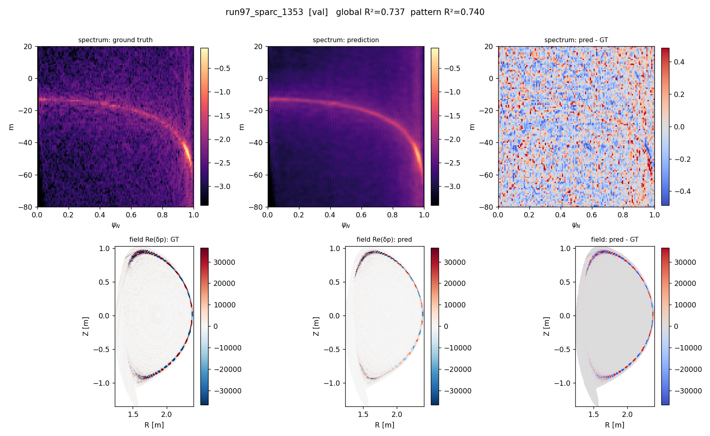
Worst (pattern R² = 0.01) — the model misplaces a compact core mode toward the edge; the RZ view makes the failure obvious where the spectrum alone is ambiguous:
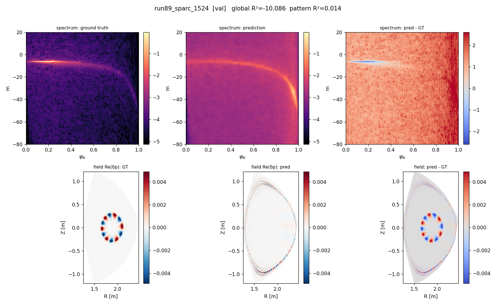
python scripts/m3dc1/internal/plot_case_field_recon.py \
--run runs/spectrum_image_full_maxnorm_log10 --split val \
--out-dir docs/m3dc1/assets --tag maxnorm_log10
| Max‑norm log10 (best) | Max‑norm raw |
|---|---|
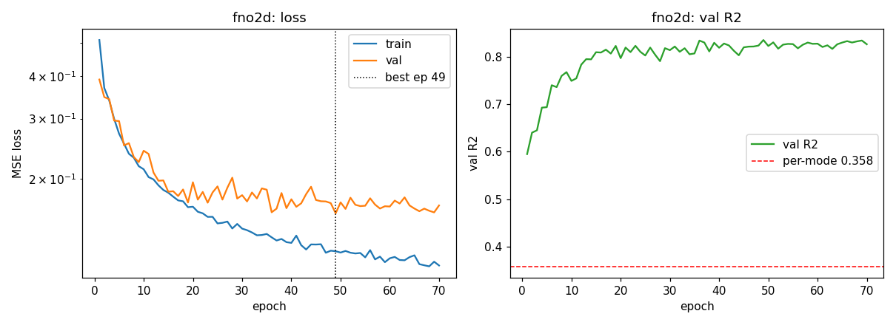 |
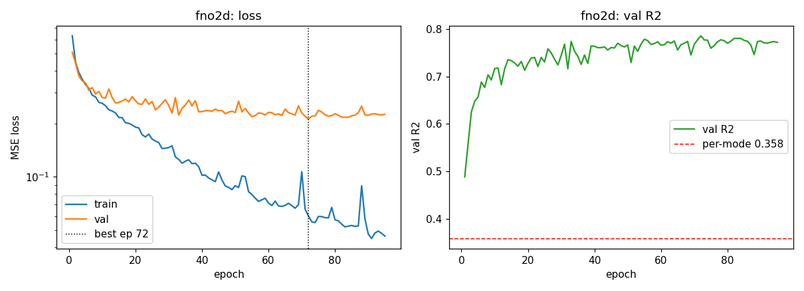 |
Non‑normalized full run (the plateau being broken):
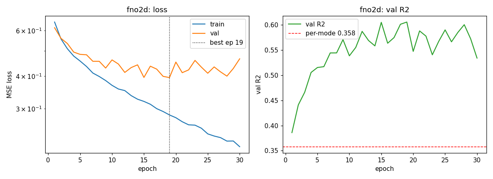
Three orthogonal levers on the full dataset (FNO2D, 48 Fourier modes, composite loss = pixel MSE + soft‑argmax peak‑location + marginal profiles), all evaluated on GPU on the same held‑out test split:
| Run | Change vs previous | test global R² | test pattern R² |
|---|---|---|---|
| max‑norm log10 (2026‑07‑01 best) | — | 0.836 (val) | — |
spectrum_fno48_floor6_smooth1 |
+ target floor (−6 dex) + Gaussian smooth σ=1 | 0.905 | 0.920 |
spectrum_fno48_floor6_smooth1_qc |
+ quarantine 2 corrupt cases | 0.9199 | 0.9238 |
spectrum_fno48_floor6_smooth1_qc_bal |
+ core‑mode balancing (--balance-psi) |
0.9168 | 0.9206 |
spectrum_unet_floor6_smooth1 |
U‑Net, same recipe | 0.891 | 0.896 |
The levers (all in train_spectrum_image.py):
- Target flooring (--target-floor 6): clip the max‑norm log10 target at −6 dex,
deleting the ungradeable noise‑floor texture so R²/RMSE focus on the top 6 decades of
amplitude that actually define the mode.
- Target smoothing (--target-smooth 1): Gaussian σ=1 denoise removes high‑frequency
speckle while preserving the coherent ridge (the ~5 % incompressible noise that caps R²).
- Quarantine (scan_quality.py →
--exclude-list): a full scan of all 9,976 cases flagged only 2 empty‑spectrum /
NaN‑γ cases (run15_sparc_1416, run15_sparc_1417); excluding them removes the
pathological tail that single‑handedly moved the mean.
- Core‑mode balancing (--balance-psi): oversamples rare low‑ψ_N (core) peak bins via
weighted resampling so core modes are seen ~as often as edge modes, without changing
file sampling. Split persisted to splits.json so all evals use the identical held‑out set.
Did balancing help? On a shared test split, per peak‑ψ_N bin (core → edge):
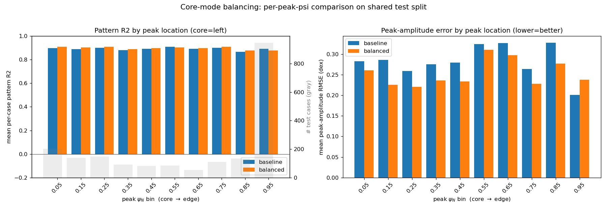
Core‑bin (ψ_N≈0.05) R² 0.897 → 0.908 and peak‑amplitude RMSE 0.247 → 0.244 dex, at a −0.003 aggregate R² cost (it gives back a little on the dominant edge bin). Balancing improves exactly the two things aggregate R² hides — rare core modes and peak amplitude.
Peak‑fidelity metrics now logged live each epoch: val_dpsi (peak location error in
ψ_N) and val_peak_rmse (RMSE over the top‑1 % amplitude pixels, in dex). Best model:
dpsi ≈ 0.05 (location ✓) but peak RMSE ≈ 0.25 dex (peak amplitude still ≈ 1.8× off —
the remaining lever; next: --peak-weight, less smoothing).
⚠️ Evaluate FNO models on GPU. The FNO's FFT spectral convolutions produce ~0.05 lower R² on CPU than the GPU the model trained on. All eval scripts (
eval_best_run.py,compare_balance.py,field_recon_compare.py,export_predictions_cache.py) default to--device cuda.
Distribution of per‑case pattern R² over the 1,994‑case test split, plus a gallery of
cases sampled worst→best (p2 … p98). Generated by
metric_gallery.py:
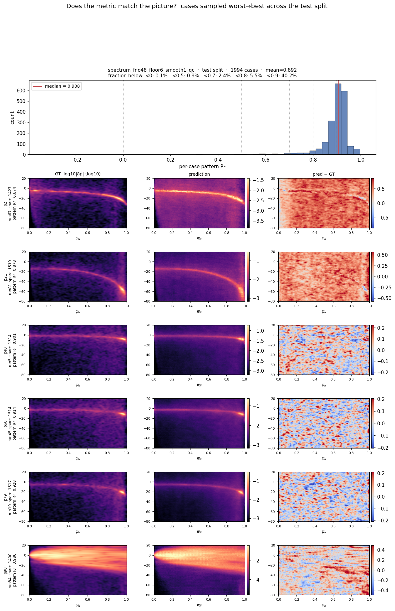
m‑ridge (the physically meaningful structure) is located and shaped correctly; the
residual (pred − GT) is dominated by noise‑floor texture, not ridge error. Even the
p2 worst case gets the ridge right and differs mainly in a systematic floor offset.m‑structure and exact peak amplitude — precisely
the things target‑smoothing (σ=1) trades away and that the field reconstruction below
exposes. Pattern R² measures spectral‑shape recovery; it over‑states field
usefulness. The field is the harder, more honest test.Use this against the interactive explorer to gut‑check any model:
explore_mlm3dc1_predictions.ipynb
now colors the parametric coverage map by R2 / pattern_R2 / SSIM / NRMSE and pops
a 2×3 (spectrum + field, GT/pred/diff) panel on tap, and carries a model‑comparison table
across all cached models.
Combined spectrum + field gallery (same cases, 6 panels per row):
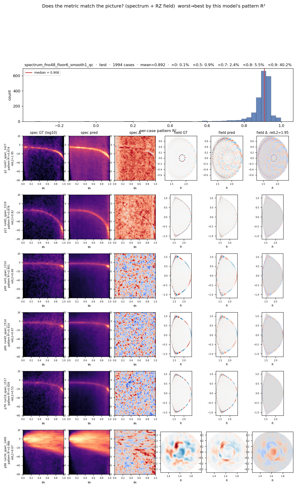
Field-only gallery (same cases):
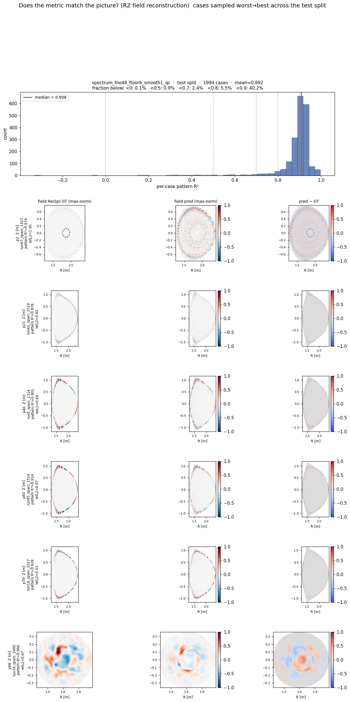
The magnitude is what the surrogate learns; the phase and absolute scale are unlearnable
per‑eigenmode gauges, so the predicted |δp̂| is combined with the case's true phase,
inverse‑FFT'd along m, mapped onto the fpy PEST flux grid, and each field is
max‑normalized to unit amplitude for a pure shape comparison against the ground‑truth
data. Rows = worst / median / best test case; columns = true / predicted / difference
(field_recon_compare.py):
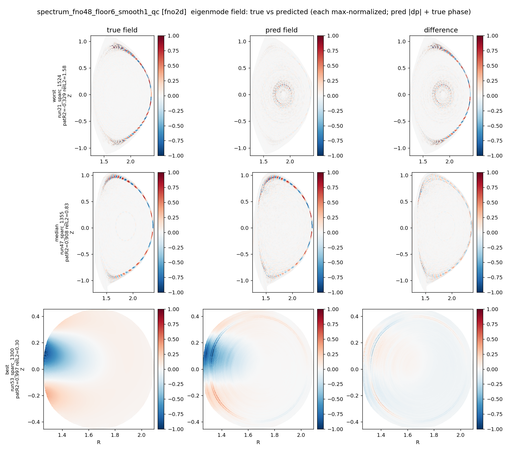
Many edge‑localized modes carry a non‑negligible fraction of their energy at native
m > 20, outside the baseline training window m ∈ [−80, 20]. A full‑dataset scan
(scan_m_hi_tail.py) quantifies this:
| Native energy at m > 20 | Cases | Share |
|---|---|---|
| ≥ 1% | 3,354 | 34% |
| ≥ 5% | 199 | 2% |
| ≥ 10% | 109 | 1% |
The median case has only 0.75% energy at m > 20 — the baseline window is fine for typical cases. The tail matters for ~200 edge cases (≥ 5% high‑m energy), which are 75–90% edge‑localized (peak ψ_N > 0.9).
[-100, 100] — global vs tail trade‑off¶| Run | m window | grid | test global R² | test pattern R² |
|---|---|---|---|---|
spectrum_fno48_floor6_smooth1_qc |
[−80, 20] | 128 | 0.920 | 0.924 |
spectrum_fno48_floor6_smooth1_qc_m100 |
[−100, 100] | 128 | 0.890 | 0.906 |
spectrum_fno48_floor6_smooth1_qc_m100gr192 |
[−100, 100] | 192 | 0.886 | 0.894 |
spectrum_fno48_floor6_smooth1_qc_geom |
[−80, 20] + geom | 128 | 0.919 | 0.925 |
Globally, wider windows hurt — same 75M‑parameter FNO capacity is spread over twice the m‑range with many extra noise‑floor pixels.
On the high‑m tail subset (test cases with ≥ 5% native energy at m > 20, n = 40):
| Model | pattern R² (full image) | pattern R² m > 20 only | pattern R² m ∈ [−80, 20] (fair core band) | Δ vs _qc on core band |
|---|---|---|---|---|
_qc baseline |
0.855 | (not predicted) | 0.855 | — |
m100g128 |
0.909 | 0.910 | 0.879 | +0.025 (wins 88%) |
m100gr192 |
0.892 | 0.889 | 0.858 | +0.003 (wins 58%) |
Verdict on m100gr192: it does not beat m100g128 on high‑m tail cases. Despite
finer ψ/m sampling (grid 192), aggregate pattern R² is lower (0.894 vs 0.906) and the
dedicated m > 20 region R² on tail≥5% cases is 0.889 vs 0.910 for grid 128. On
the fair core band m ∈ [−80, 20], m100gr192 is essentially tied with _qc (+0.003),
while m100g128 gains +0.025 on the same band — widening the window helps the tail
only at grid 128, not 192.
Per‑case pattern R² degrades as the native high‑m energy fraction grows (test split).
Scatter + binned means (plot_hi_m_tail_scatter.py):

For _qc, the 2–5% tail bin already drops to R² ≈ 0.83; cases with ≥ 20% energy at
m > 20 average R² ≈ 0.84. U‑Net follows the same trend. A full multi‑model scatter
(including m100g128, m100gr192, _qc_geom) is generated by
generate_mwindow_assets.slurm.
_qc cases¶Each model gets two combined spectrum+field galleries (6 panels per row):
1. Native — cases p2…p98 worst→best for that model's pattern R².
2. Reference‑matched — the same case keys at the same percentiles from _qc, so
cross‑model rows are directly comparable.
| Gallery | Description |
|---|---|
metric_reality_check_qc_combined.png |
_qc baseline (native order) |
metric_reality_check_unet_combined.png |
U‑Net (native) |
metric_reality_check_unet_refqc_combined.png |
U‑Net on _qc p2…p98 cases |
metric_reality_check_m100g128_combined.png |
wide window g128 (native) — generating |
metric_reality_check_m100g128_refqc_combined.png |
g128 on _qc cases — generating |
metric_reality_check_m100g192_refqc_combined.png |
g192 on _qc cases — generating |
metric_reality_check_qc_geom_combined.png |
geometry channels (native) — generating |
Generate with:
python scripts/m3dc1/internal/metric_gallery.py \
--cache runs/spectrum_fno48_floor6_smooth1_qc_m100/predictions_cache.npz \
--ref-cache runs/spectrum_fno48_floor6_smooth1_qc/predictions_cache.npz \
--out docs/m3dc1/assets/metric_reality_check_m100g128_refqc_combined.png
--geom-channels — what it adds¶With --geom-channels, three ψ_N‑only input planes are appended (repeated across m
rows), computed from each case's equilibrium HDF5 in
_geometry_profiles():
| Channel | Formula / meaning |
|---|---|
shear |
(ψ_N / q) · dq/dψ_N — magnetic shear proxy |
flux_exp |
flux‑surface‑averaged \|∇ψ\| binned by ψ_N, normalized — edge flux compression |
lcfs_prox |
1 − ψ_N (1 at axis, 0 at LCFS) |
These give the FNO explicit edge‑geometry cues that ψ_N alone does not encode (real‑space
LCFS shape, grad‑ψ compression at the pedestal). _qc_geom reaches test pattern R²
0.925 vs 0.924 for _qc at the same m window — a small aggregate gain. It does
not add m > 20 rows; high‑m tail cases still need a wider or asymmetric m window.
fno_modes=96 or fno_hidden=64?¶Probably not as the next lever on grid 128:
| Config | Params | Notes |
|---|---|---|
| modes=48, hidden=32 (current) | 75M | modes=48 already spans to FFT Nyquist on grid 128 |
| modes=96, hidden=32 | ~300M | 4× spectral weights; dim returns, not new physics |
| modes=48, hidden=64 | ~150M | wider conv trunk; doesn't fix m‑window coarsening |
| grid=192, modes=48 | 75M | tested — worse global and worse high‑m tail vs g128 |
The bottleneck on edge/high‑m modes is missing input coverage (m > 20 not in the
target) and field‑space sharpness, not FNO spectral truncation at 48 modes.
Recommended next experiment: asymmetric window [−80, 100] at grid 128 (keep full
resolution in the trained band, add high‑m rows only where needed) plus geometry channels.
Launch the spectrum surrogate (one command, handles salloc+srun):
# fresh full-dataset run, max-norm log10
scripts/m3dc1/internal/spectrum_train.sh log10 fresh 120
# resume from the last checkpoint
scripts/m3dc1/internal/spectrum_train.sh log10 resume 120
Runbook: SPECTRUM_TRAINING_RUNBOOK.md.
Checkpoint policy & early stopping. Every epoch writes ckpt_<model>_last.pt
(weights + optimizer state) for resume; ckpt_<model>.pt is overwritten whenever
val loss beats the previous best. Training early‑stops after --patience epochs
without improvement and then reloads the best checkpoint for final evaluation. Resume
with --resume <ckpt>.
Monitor any run (stats report + loss curves):
python -m surge.check_training --run runs/spectrum_image_full_maxnorm_log10
Writes check_training_loss.png and prints epochs, best/latest val loss & R², trend,
early‑stop status, and final test metrics.
(surge/check_training.py)
Export predictions for offline analysis:
python scripts/m3dc1/internal/export_predictions_cache.py \
--run runs/spectrum_image_full_maxnorm_log10 --model fno2d
Produces predictions_cache.npz (GT, pred, per‑case R², γ, ntor, metadata) consumed by
the curation notebook.
(export_predictions_cache.py)
Interactively curate & validate predictions (Bokeh/Panel: spectrum & field
comparison, stable/unstable check, and γ‑vs‑time convergence per case):
m3dc1ml/notebooks/curate_validate_mlm3dc1_predictions.ipynb.
| Task | Best result | Status |
|---|---|---|
| Growth rate γ | R² 0.87 (HPO torch_mlp) | ✅ strong |
| Core/edge mode locator | R² 0.91 / 95 % acc / AUC 0.99 | ✅ strong |
| δp̂ spectrum image — global R² | 0.920 (FNO2D floor6+smooth1+quarantine) | ✅ 0.605 → 0.836 → 0.920 |
| δp̂ spectrum image — pattern R² | 0.924 (test) | ✅ |
| δp̂ spectrum image — core‑mode R² | 0.908 (w/ --balance-psi) |
✅ balancing helps rare modes |
| δp̂ peak amplitude (peak RMSE) | ≈ 0.25 dex (~1.8× off) | 🟡 remaining lever |
| δp̂ per‑mode magnitude (MLP) | R² 0.36 | 🟡 superseded by image model |
| Re(δp̂) | ≈ 0 | ❌ ill‑posed (use magnitude) |
What moved the needle: (1) per‑case max‑normalization (learn shape, not amplitude); (2) target flooring + smoothing (drop the ungradeable noise floor); (3) quarantining the 2 corrupt cases; (4) core‑mode balancing for the rare low‑ψ_N modes.
Known limitation — geometry is not an input (baseline _qc). Training happens
entirely in (m, ψ_N) spectral space. The model sees the ψ_N coordinate (so ψ_N=1 =
LCFS), q/p profiles, the m−n·q resonance, and shaping scalars (κ, δ, R0, a) — but
not the real‑space ψ(R,Z) flux map, edge flux‑surface compression, or the LCFS (R,Z)
location. Edge‑localized modes' sharpness/m‑broadening are set by exactly that edge
geometry, which is the population the model handles worst. --geom-channels (§4.5)
addresses part of this; high‑m tail cases additionally need m‑window coverage.
Next steps: (1) asymmetric m window [−80, 100] at grid 128; (2) combine with
--geom-channels; (3) attack peak amplitude with --peak-weight and reduced smoothing
(target peak RMSE < 0.2 dex so edge modes survive field reconstruction); (4) FNO+U‑Net
ensemble; (5) physics‑residual target (predict deviation from the m ≈ n·q(ψ) ridge
prior); (6) correlate residual error with gs_error/γ(t) convergence.
We added field_bench.py to rank spectrum
surrogates by post-hoc field relL2 (true phase injected, IFFT, max-normalized —
identical convention to field_recon_compare.py),
not by spectrum pattern R². Full test split (n = 1994).
| Model | frac(relL2>1) ↓ | p90 relL2 ↓ | median | mean | mean α-opt | CRF ↑ |
|---|---|---|---|---|---|---|
qc_peak4 |
0.180 | 1.165 | 0.730 | 0.808 | 0.696 | 0.825 |
_qc |
0.200 | 1.217 | 0.741 | 0.821 | 0.705 | 0.737 |
qc_mhi100 |
0.267 | 1.350 | 0.825 | 0.921 | 0.774 | 0.788 |
Production pick reversed: qc_mhi100 was the patR²-selected model (mean patR² 0.906,
median 0.932) but ranks worst on field quality (highest frac broken, highest p90).
qc_peak4 was the pre–field-loss field candidate; superseded by qc_peak4_fieldloss
(§9) after full‑test field_bench.
Pairwise wins (lowest relL2 per case): peak4 1042, _qc 722, mhi100 230.
Artifacts: field_bench/leaderboard.json,
per_case.csv,
per_family.csv,
relL2_hist_*.png.
_qc 0.737)
means most residual energy sits in low radial-wavenumber bands — errors that survive
field reconstruction, not incoherent speckle.Single lever on qc_peak4 recipe (m ∈ [−80, 20], --peak-weight 4, floor6,
smooth1, quarantine, no geom):
frac(relL2>1) then p90 on a family-stratified val subset
(--select-by field), not patR².qc_mhi100 training was killed at epoch 237 (4 h wall). On --resume, the early-stop
patience counter reset to zero, so the run continued for another full --patience
window instead of stopping near the prior best epoch. Fix (planned): persist
no_improve, best_epoch, and field-selection bests in checkpoints; restore on resume.
Update 2026-07-04 (feat/m3dc1-field-loss): Implemented in
train_spectrum_image.py —
checkpoints now store no_improve, best_epoch, best_field_frac_gt1, best_field_p90;
--resume restores them. Added --time-budget-min (default 0 = off) for clean 4 h exits.
Recipe: m ∈ [−80, 20], --peak-weight 4, floor6, smooth1, quarantine, no geom
(identical base to qc_peak4). New levers (this run only):
--field-loss-weight 0.5 (differentiable IFFT-proxy relL2 with oracle true phase,
warmup 20 epochs) and --select-by field (save ckpt_fno2d.pt when
frac(relL2>1) on a 64‑case family‑stratified val subset improves, p90 tiebreak).
Launch (4 h interactive, restartable):
bash scripts/m3dc1/internal/run_field_loss_4h.sh
# OUT=runs/spectrum_fno48_floor6_smooth1_qc_peak4_fieldloss
Step 0 finding: PHASE AT TRAIN TIME: YES — complex spectrum/p/spec in every
csdata_deltap_b_ver.h5 case; the loader uses |spec| only unless field-loss flags are set.
| Role | When | What | Effect |
|---|---|---|---|
| Field loss (gradient) | Every batch step | Un‑norm pred → inject true φ → torch IFFT on 128×128 grid → max‑norm relL2; added to composite loss (w=0.5, ramped over 20 epochs) | Backprop penalizes spectral errors in proportion to field damage |
| Field metrics (selection) | Every 5 epochs | Native‑grid relL2 on 64 stratified val cases; --select-by field |
Picks which epoch is saved as ckpt_fno2d.pt — no gradients |
Both use oracle true phase. Role 1 changed what the weights learned; Role 2 changed which
snapshot was kept. Logged fld_frac>1 / fld_p90 during training are Role 2 only.
Training ran to epoch 400; spectrum val_r2 kept improving through the plateau, but
field metrics on the 64‑case subset peaked early. Saved checkpoint: epoch 45
(fld_frac>1=0.0, fld_p90=0.664 on the subset; last subset improvement before early‑stop
patience). Epoch 60 had lower subset p90 (0.656) but fld_frac>1=0.016 — the selector
correctly kept epoch 45 under the frac‑first rule.
Training curves (loss_fno2d.png from the run directory): spectrum val_r2 keeps climbing
after epoch ~45 while fld_frac>1 / fld_p90 on the 64‑case subset plateau — the decoupling
§7 warned about, now visible in the same plot once field metrics are logged.

Post‑training eval on GPU (same convention as §7):
OUT=runs/spectrum_fno48_floor6_smooth1_qc_peak4_fieldloss
python scripts/m3dc1/internal/export_predictions_cache.py --run "$OUT" --device cuda
python scripts/m3dc1/internal/metric_gallery.py \
--cache "$OUT/predictions_cache.npz" \
--ref-cache runs/spectrum_fno48_floor6_smooth1_qc/predictions_cache.npz \
--split test --metric r2_pattern \
--out docs/m3dc1/assets/metric_reality_check_qc_peak4_fieldloss_refqc_combined.png
python scripts/m3dc1/internal/metric_gallery.py \
--cache "$OUT/predictions_cache.npz" \
--ref-cache runs/spectrum_fno48_floor6_smooth1_qc/predictions_cache.npz \
--split test --metric r2_pattern --field \
--out docs/m3dc1/assets/metric_reality_check_qc_peak4_fieldloss_refqc_field.png
python scripts/m3dc1/internal/plot_case_field_recon.py \
--run "$OUT" --split test --out-dir docs/m3dc1/assets --tag fieldloss_test
python scripts/m3dc1/internal/field_bench.py \
--runs runs/spectrum_fno48_floor6_smooth1_qc_peak4 \
runs/spectrum_fno48_floor6_smooth1_qc \
runs/spectrum_fno48_floor6_smooth1_qc_mhi100 \
"$OUT" \
--split test --device cuda --out field_bench/with_fieldloss
Accuracy = field relL2 on the full held‑out test split (n = 1994), oracle phase injected, max‑normalized — not spectrum patR². The epoch‑45 checkpoint was confirmed on this full population (not the 64‑case subset alone).
| Model | frac(relL2>1) ↓ | p90 relL2 ↓ | median | mean | mean α-opt | CRF ↑ |
|---|---|---|---|---|---|---|
qc_peak4_fieldloss |
0.100 | 1.001 | 0.632 | 0.702 | 0.631 | 0.907 |
qc_peak4 (prev prod.) |
0.180 | 1.165 | 0.730 | 0.808 | 0.696 | 0.825 |
_qc |
0.200 | 1.217 | 0.741 | 0.821 | 0.705 | 0.737 |
qc_mhi100 |
0.267 | 1.350 | 0.825 | 0.921 | 0.774 | 0.788 |
Pairwise vs qc_peak4 (full test): fieldloss wins 1691, peak4 wins 303 (85%).
Overall lowest relL2 among all four models on 1502 / 1994 cases. Broken cases
(relL2>1) dropped 358 → 200.
Spectrum tradeoff (expected): export cache median patR² 0.888 vs qc_peak4 test
patR² 0.922. Field fidelity was bought with deliberate spectrum score — consistent with
§7.2 (patR² overstates deployment quality).
Broken cases (relL2>1) shift left under field‑loss training; p90 drops 1.165 → 1.001.

Pairwise wins on the same 1994 cases (lowest relL2 per case):

_qc p2…p98 cases¶Side‑by‑side on the identical test cases (ref‑cache = _qc percentiles). Left: previous
production qc_peak4. Right: qc_peak4_fieldloss (epoch‑45 checkpoint). Note lower field
relL2 in the Δ panels despite slightly lower patR² in the histogram headers.
qc_peak4 (prev prod.) |
qc_peak4_fieldloss |
|---|---|
 |
 |
Field‑only panels (same case ordering):

2×3 panels per case — spectrum row + RZ field row (GT / pred / Δ), from
plot_case_field_recon.py:
Worst (patR² = −0.64) — ridge location roughly correct; residual is noise‑floor / amplitude:

Median (patR² = 0.91) — edge mode envelope reproduced:

Best (patR² = 0.99) — core crescent almost exact:

3×3 eigenmode field panel (worst / median / best by patR², max-normalized), same style as
§4 field_recon_compare.py:

worst run21_sparc_1524 patR²=−0.51 relL2=2.16 · median run96_sparc_1353 patR²=0.90
relL2=0.45 · best run91_sparc_1525 patR²=0.96 relL2=0.70
Production artifact: deploy runs/.../fieldloss/ckpt_fno2d.pt (epoch 45), not
ckpt_fno2d_last.pt (epoch 400). Re‑export + field_bench if re‑ranking alternate epoch
checkpoints (e.g. ep 30/60) on full test before changing the pin.
Artifacts:
field_bench/with_fieldloss/leaderboard.json,
per_case.csv,
per_family.csv.
| family | n | model | mean relL2 | frac>1 | notes |
|---|---|---|---|---|---|
| sparc_1427 | 22 | peak4 | 0.880 | 0.23 | |
| fieldloss | 0.810 | 0.14 | improved | ||
| sparc_1430 | 19 | peak4 | 0.914 | 0.26 | |
| fieldloss | 0.894 | 0.26 | slight mean gain | ||
| sparc_1530 | 20 | peak4 | 0.735 | 0.05 | |
| fieldloss | 0.813 | 0.25 | regressed — diagnose before next lever |
Aggregate: 51 equilibrium families improved frac>1 by >5 pp vs peak4; 2 regressed
(sparc_1530, sparc_1500). The global win is real but not uniform — plot sparc_1530 cases
(plot_case_field_recon.py / metric_gallery.py --ref-cache) to decide whether failures
are edge/geometry (→ Run B) or high‑m truncation (→ Run A) before the next 4 h session.
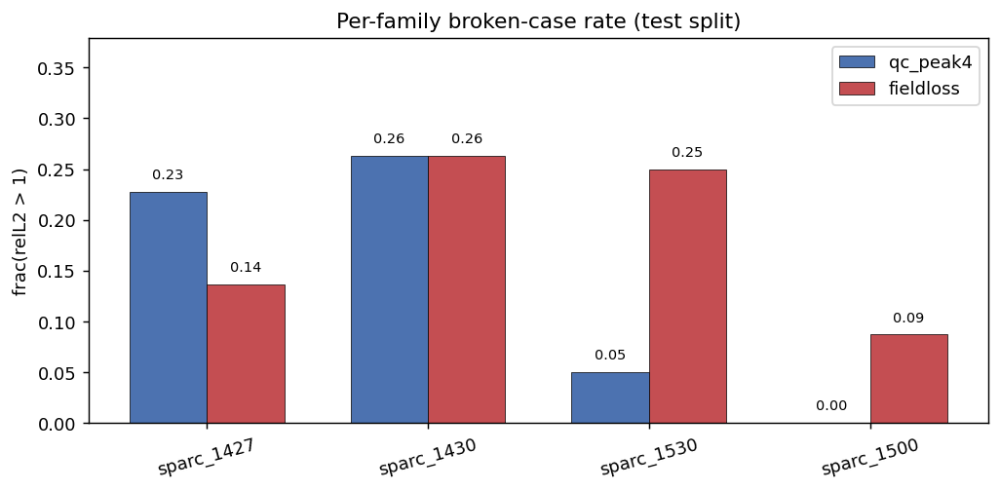
sparc_1530 is the standout regression (frac>1 0.05 → 0.25); sparc_1427 improves (0.23 → 0.14). This bar chart is the diagnostic input for choosing Run A vs Run B.
All field metrics — training loss, subset selection, and field_bench — inject true phase.
We measure magnitude accuracy given perfect phase, not deployment accuracy without phase.
Report both oracle‑phase field relL2 (current) and estimated‑phase relL2 (future) when phase
is no longer oracle.
Do not combine geom + wide m‑window + field‑loss in one run (same lesson as
mhi100_geom_peak4). After sparc_1530 diagnosis:
| Run | Lever | Question |
|---|---|---|
| A | field‑loss + m ∈ [−80, 100] | Does field‑selection rescue the wide window that hurt qc_mhi100? |
| B | field‑loss + --geom-channels |
Does geometry fix edge/sparc families? |
| C | A + B | Only if A and B independently beat this baseline |
Lower priority: --field-loss-weight ablation {0.25, 0.5, 1.0}; --coherence-loss-weight
(CRF already high at 0.907 — coherence surrogate may add little).
Generated from SURGE_M3DC1_RESULTS_REPORT.md. Companion:
Facts ·
Narrative ·
Remote viewing
{kind=link}
{kind=link}
{kind=link}